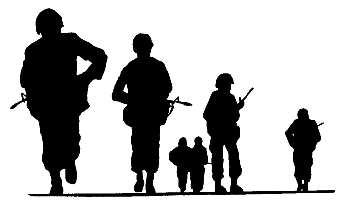

Welcome! My name is Francisco, but I go by Cisco. I was born in
Venezuela in 1990. My mom, sister, and I moved to Knoxville, TN when I was in the fifth grade.
I went to school there until I joined the army. In the army, I was a combat medic. I returned to Knoxville after four years in the army to get a bachelors in Mechanical Engineering.
 After
graduating, I found a job as a process engineer in a biomedical tech company. They build a software
that helps surgeons plan shoulder replacement surgeries (other joints in the future). Through this
job, I became inspired to become a software developer and thus here I am.
After
graduating, I found a job as a process engineer in a biomedical tech company. They build a software
that helps surgeons plan shoulder replacement surgeries (other joints in the future). Through this
job, I became inspired to become a software developer and thus here I am.
My favorite color is yellow.
- Combat Medic
- Did cool medical stuff in the army.
- Process Engineer
- Currently work as a process Engineer.
- Server
- Chesapeake's Seafood Restaurant
Experience
- Biochemistry
- I thought I wanted to go to medical school.
- Mechanical Engineering
- Wanted to build stuff.
- Full Stack JavaScript
- What I'm working on currently.
Education
- Favorite Restaurants
(changes often) - Kefi
- Chesapeake's Seafood
- Chick-Fil-A
- Chipotle
- Olive Garden
- Einstein Bros
- Starbucks
- Jack Stack's BBQ
- Panera
- Bonefish
Quiz Time!
- Was I born in Knoxville, TN?
- Was I an combat medic in the Army?
- Did I always know I wanted to be a software developer?
- Is my favorite color yellow?
- Am I happy you are here?